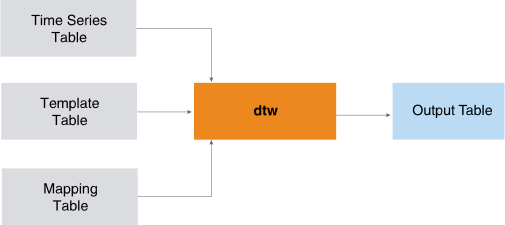
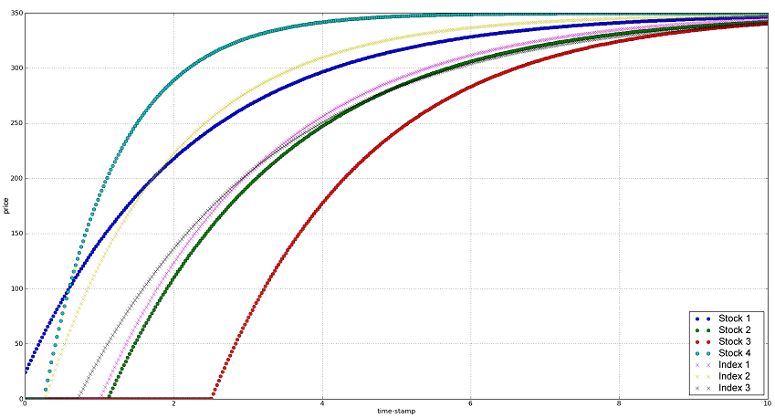

DTW
The DTW function performs dynamic time warping (DTW), which measures the similarity (warp distance) between two time series that vary in time or speed. You can use DTW to analyze any data that can be represented linearly—for example, video, audio, and graphics.
For example:
- In two videos, DTW can detect similarities in walking patterns, even if in one video the person is walking slowly and in another, the same person is walking fast.
- In audio, DTW can detect similarities in speech speeds (useful in speech recognition applications).
Given an input table, a template table, and a mapping table, DTW compares each time series in the input table to the corresponding time series in the template table. The correspondence is defined by the mapping table.

For more information, see FastDTW: Toward Accurate Dynamic Time Warping in Linear Time and Space. Stan Salvador and Philip Chan. KDD Workshop on Mining Temporal and Sequential Data, pp. 70-80, 2004 (http://cs.fit.edu/~pkc/papers/tdm04.pdf)
DTW Syntax
Version 1.5
SELECT * FROM DTW (
ON { table | view | (query) } AS InputTable
PARTITION BY i_partition_column [,...] ORDER BY i_order_column [,...]
ON template_table AS TemplateTable DIMENSION ORDER BY t_order_column [,...]
ON mapping_table AS MappingTable
PARTITION BY m_partition_column [,...]
USING
TargetColumns ('target_value', 'target_timestamp')
TemplateColumns ('template_value', 'template_timestamp')
TimeseriesID ('timeseriesid' [,...])
TemplateID ('templateid' [,...])
[ Radius (radius) ]
[ DistanceMethod ('distance_method') ]
[ WarpPath ({'true'|'t'|'yes'|'y'|'1'|'false'|'f'|'no'|'n'|'0'})]
) AS alias;DTW Syntax Elements
- TargetColumns
- Specify the names of the InputTable columns that contain the values and timestamps of the time series. If these columns contain NaN or infinity values, use a WHERE clause to remove them.
- TemplateColumns
- Specify the names of the TemplateTable columns that contain the values and timestamps of the time series. If these columns contain NaN or infinity values, use a WHERE clause to remove them.
- TimeseriesID
- Specify the names of the columns by which the InputTable is partitioned. These columns comprise the unique ID for a time series in InputTable.
- TemplateID
- Specify the names of the columns by which the TemplateTable is ordered. These columns comprise the unique ID for a time series in TemplateTable.
- Radius
- [Optional] Specify the integer value that determines the projected warp path from a previous resolution.
- DistanceMethod
- [Optional] Specify the metric for computing the warping distance (options are case-sensitive):
distance_method Description 'EuclideanDistance'(Default)Euclidean distance 'ManhattanDistance'Manhattan distance 'BinaryDistance'Binary distance - WarpPath
- [Optional] Determines whether to output the warping path.
DTW Input
| Table | Description |
|---|---|
| InputTable | Contains information for one or more time series. |
| TemplateTable | Defines correspondence between InputTable and TemplateTable rows. Columns by which these tables are ordered must agree in number and data type. That is, each i_order_column must have a corresponding t_order_column with the same data type. However, corresponding order columns can have different names. |
| MappingTable | Defines correspondence between InputTable and MappingTable rows. Columns by which these are partitioned must agree in number and data type. That is, each i_partition_column must have a corresponding m_partition_column with the same data type. However, corresponding partition columns can have different names. |
InputTable Schema
Each row contains information for one time series.
| Column | Data Type | Description |
|---|---|---|
| timeseriesid | INTEGER | Time series identifier. |
| timestamp | INTEGER, SMALLINT, BIGINT, NUMERIC, or DOUBLE PRECISION | Timestamp. |
| value | DOUBLE PRECISION | Value. |
TemplateTable Schema
Each row contains information for one time series.
| Column | Data Type | Description |
|---|---|---|
| templateid | INTEGER | Time series identifier. |
| timestamp | INTEGER, SMALLINT, BIGINT, NUMERIC, or DOUBLE PRECISION | Identifier of time series in InputTable that corresponds to time series specified by timeseriesid in this table. |
| value | DOUBLE PRECISION | Value. |
MappingTable Schema
| Column | Data Type | Description |
|---|---|---|
| timeseriesid | INTEGER | Time series identifier. |
| templateid | INTEGER | Identifier of time series in InputTable that corresponds to time series specified by timeseriesid in this table. |
DTW Output
Output Table Schema
| Column | Data Type | Description |
|---|---|---|
| timeseries_id | INTEGER | Time series identifier. |
| template_id | INTEGER | Template identifier. |
| warp_distance | DOUBLE PRECISION | Warp distance. By definition, DTW(0,0)=0 and DTW(n,0)=DTW(0,n)=infinity. |
SELECT "warp_distance" FROM output_table;DTW Example
This example compares multiple time series to both a common template and each other. Each time series represents stock prices and the template represents a series of stock index prices.
Input
| timeseriesid | timestamp1 | stockprice |
|---|---|---|
| 1 | 0 | 24.2019 |
| 1 | 0.025063 | 27.8701 |
| 1 | 0.050125 | 31.4969 |
| 1 | 0.075188 | 35.083 |
| 1 | 0.100251 | 38.6286 |
| 1 | 0.125313 | 42.1343 |
| 1 | 0.150376 | 45.6005 |
| 1 | 0.175439 | 49.0276 |
| 1 | 0.200501 | 52.4162 |
| 1 | 0.225564 | 55.7666 |
| 1 | 0.250627 | 59.0792 |
| ... | ... | ... |
| templateid | timestamp2 | index_price |
|---|---|---|
| 1 | 0 | 0 |
| 1 | 0.025063 | 0 |
| 1 | 0.050125 | 0 |
| 1 | 0.075188 | 0 |
| 1 | 0.100251 | 0 |
| 1 | 0.125313 | 0 |
| 1 | 0.150376 | 0 |
| 1 | 0.175439 | 0 |
| 1 | 0.200501 | 0 |
| 1 | 0.225564 | 0 |
| 1 | 0.250627 | 0 |
| ... | ... | ... |
| timeseriesid | templateid |
|---|---|
| 1 | 1 |
| 1 | 2 |
| 1 | 3 |
| 2 | 1 |
| 2 | 2 |
| 2 | 3 |
| 3 | 1 |
| 3 | 2 |
| 3 | 3 |
| 4 | 1 |
| 4 | 2 |
| 4 | 3 |
SQL Call
SELECT * FROM DTW (
ON timeseriesdata AS InputTable PARTITION BY timeseriesid ORDER BY timestamp1
ON templatedata AS TemplateTable DIMENSION ORDER BY timestamp2
ON mappingdata AS MappingTable PARTITION BY timeseriesid
USING
TargetColumns ('stockprice', 'timestamp1')
TemplateColumns ('indexprice', 'timestamp2')
TimeSeriesId ('timeseriesid')
TemplateId ('templateid')
) AS dt ORDER BY 1, 2;Output
timeseries_id template_id warp_distance
------------- ----------- ------------------
1 1 25163.9453125
1 2 7547.69140625
1 3 19577.634765625
2 1 132.66847229003906
2 2 1904.084716796875
2 3 71.78057861328125
3 1 351.6783142089844
3 2 3614.21240234375
3 3 75.77669525146484
4 1 4927.62451171875
4 2 914.2536010742188
4 3 16641.625
Plot and Interpretation of Results

The warping distance is an unnormalized measure of how dissimilar two time series are. The warp_distance column in the output table has the warping distance for all pairs in the mapping table; that is, for every timeseries_id and template_id number.
| Template | Warp Distance |
|---|---|
| 1 | 131.588 |
| 2 | 106.131 |
| 3 | ~540 |
Because the dissimilarity of two time series is not based on whether they are temporarily close (the time is stretched and the two time series that are offset by a constant time interval are effectively the same), input 3 is not very dissimilar to templates 1 and 3. However, input 4 has the largest warping distance measure from templates 1 and 3, as the curvature of the latter 2 is far from input 4. Time stretching brings input 4 closer to templates 1 and 3, but with a larger warping path (not output above) and therefore, a larger warping distance.
Download a zip file of all examples and a SQL script file that creates their input tables from the download tab  in the left pane.
in the left pane.